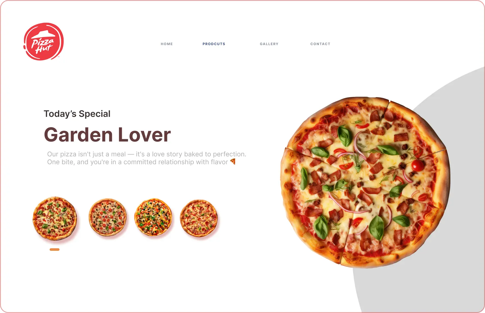
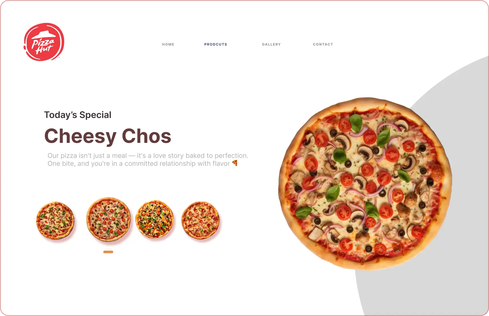
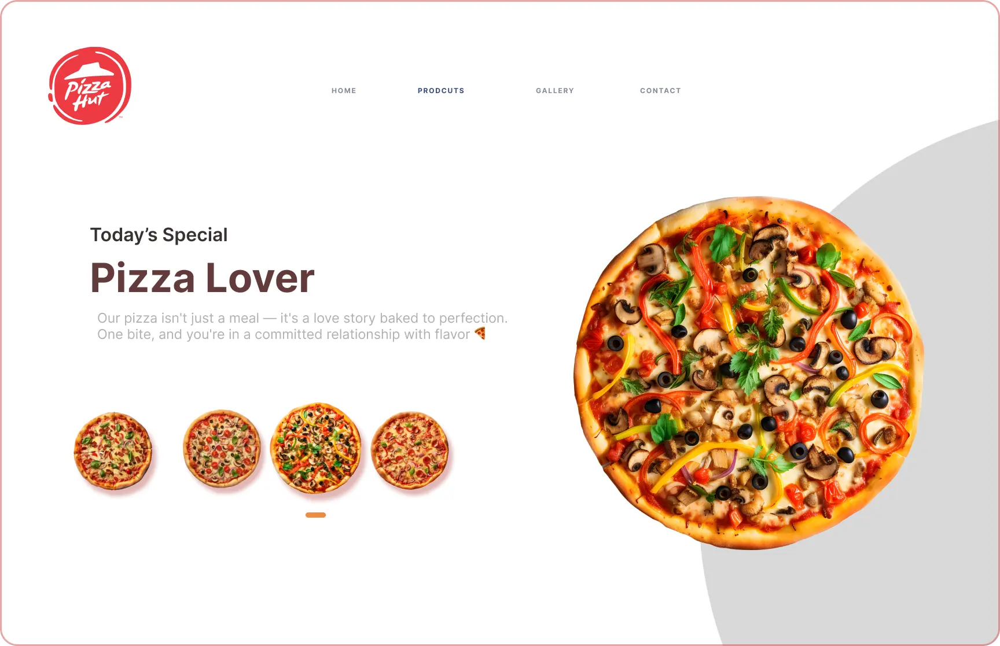

Projet PizzaHut

This visually rich landing page design for Pizza Hut features a clean layout that draws attention to the “Garden Lover” pizza as the star product. It uses vibrant imagery of pizzas with a focus on today’s special. The interface emphasizes simplicity, intuitive navigation, and visual storytelling with warm tones and soft shadows, making the food look irresistible. The navigation is minimal with sections for Home, Products, Gallery, and Contact. Subtle UI indicators show pizza options, giving users a browsing experience as flavorful as the food itself.
Project Gallery

